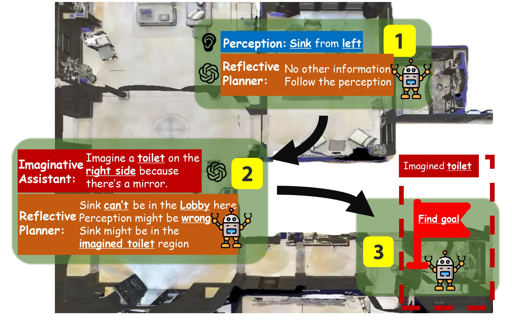
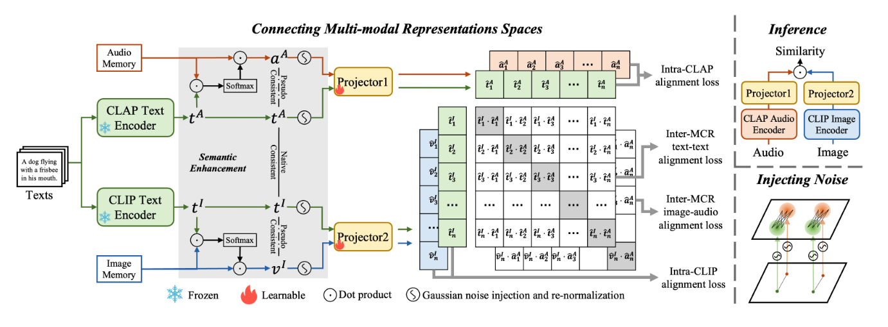
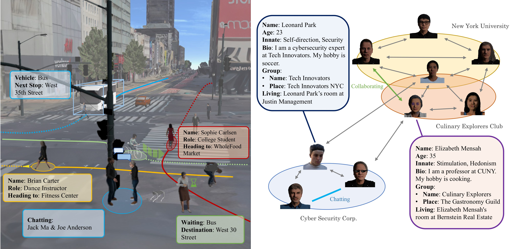
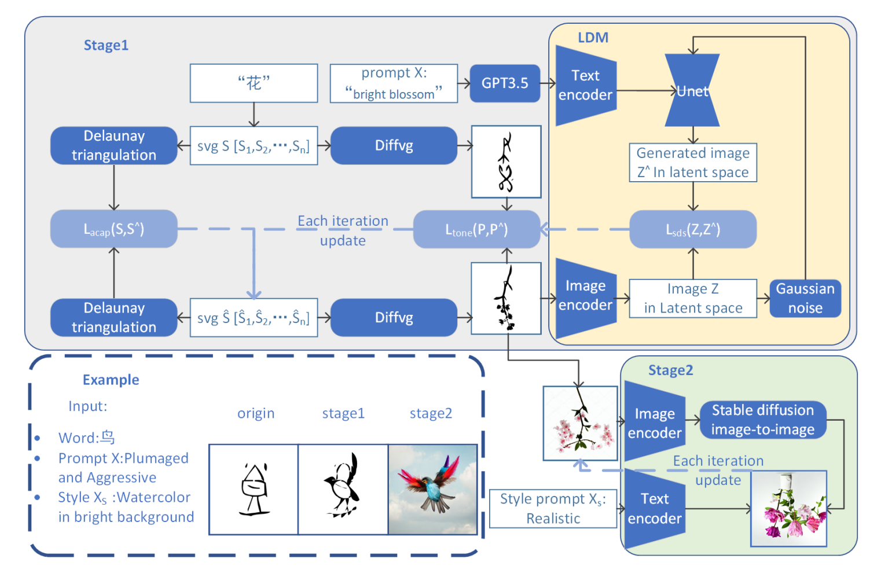

|
Jiageng Liu (刘家耕) I am currently a master student in the College of Information and Computer Sciences (CICS) at University of Massachusetts Amherst, supervised by Prof. Chuang Gan. Before that, I received my Bachelor's degree in Artificial Intelligence from the Turing Class, Chu Kochen Honors College & College of Computer Science and Technology, Zhejiang University, supervised by Prof. Zhou Zhao. My research interests lie in Embodied AI, Generative Simulation, and Computer Vision. I am actively looking for an self-funded summer internship in Embodied AI related research.
Email: jiagengliu@umass.edu |
|
{kind=link}
News
Show/Hide old news
|
ResearchMy research revolves around embodied AI and generative simulation, exploring how agents interact with complex 3D environments. I'm also excited about bridging large language models with multi-modal tasks in computer vision. |

|
ARCHITECT: Generating Vivid and Interactive 3D Scenes with Hierarchical 2D Inpainting
NeurIPS 2024 (Accepted) Yian Wang*, Xiaowen Qiu*, Jiageng Liu* et al. |
|

|
RILA: Reflective and Imaginative Language Agent for Zero-Shot Semantic Audio-Visual Navigation
CVPR 2024 (Accepted) Zeyuan Yang*, Jiageng Liu*, Peihao Chen, Anoop Cherian, Tim K. Marks, Jonathan Le Roux, Chuang Gan |
|

|
Connecting Multi-modal Contrastive Representations
NeurIPS 2023 (Accepted) Zehan Wang, Yang Zhao, Xize Cheng, Haifeng Huang, Jiageng Liu, Li Tang, Linjun Li et al. |
|

|
Virtual Community: A Generative Social World For Embodied AI
Qinhong Zhou*, …(6 people), Jiageng Liu et al. |
|

|
WordDiffuser: Helping Beginners Cognize and Memorize Glyph-semantic Pairs Using Diffusion
ISCID 2023 (Accepted) Yuhang Xu, Wanxu Xia, Yipeng Chen, Jiageng Liu et al. |
Experience & Education
|
| 2025.02 - 2025.04 |
Started New Collaboration With Microsoft Research.
University of Massachusetts Amherst, United States Research Participant |
| 2024.09 - 2026.01(Expected) |
Pursuing M.S. in CICS in Umass Amherst.
University of Massachusetts Amherst, United States Student, Advisor: Chuang Gan |
| 2023.06 - 2024.08 |
Internship in MIT-IBM Watson AI Lab, Collaborating with Prof. Chuang Gan.
MIT-IBM Watson AI Lab, United States Research Leader, Advisor: Chuang Gan |
| 2023.02 - 2023.05 |
Internship in YiWise & Zhejiang University AI Lab.
Zhejiang University, China Research Participant, Advisor: Zhou Zhao |
| 2020-09 - 2024.06 |
Pursuing B.S. in Artificial Intelligence in Turing Class, Zhejiang University.
Zhejiang University, China Student, Advisor: Zhou Zhao |
|
Last update: Apr. 2025 |
|
Thanks to Jon Barron for providing this amazing template. |